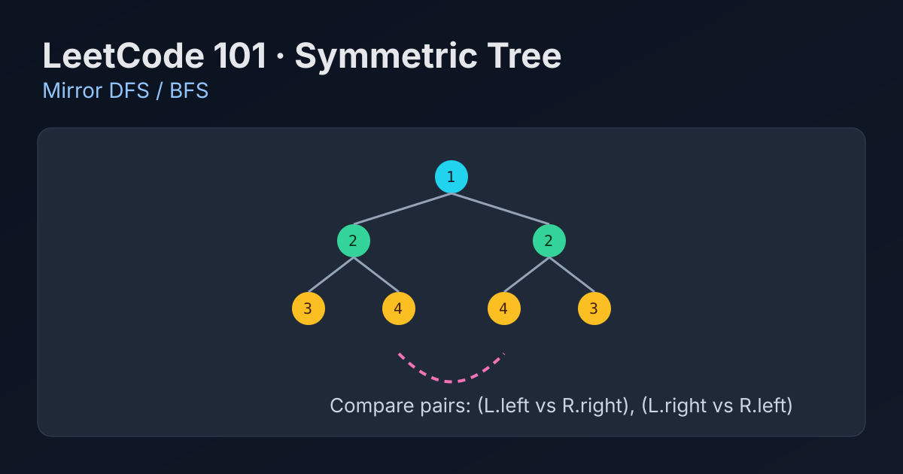

LeetCode 101: Symmetric Tree (Mirror DFS / BFS)
LeetCode 101TreeDFSBFSToday we solve LeetCode 101 - Symmetric Tree.
Source: https://leetcode.com/problems/symmetric-tree/

English
Problem Summary
Given the root of a binary tree, return true if the tree is symmetric around its center, otherwise return false.
Key Insight
Symmetry means the left subtree is the mirror of the right subtree. So we should compare node pairs in mirrored order: (a.left, b.right) and (a.right, b.left).
Brute Force and Limitations
A brute idea is to serialize two subtrees with null markers and compare one with the reversed other. It works but adds extra memory and string/list processing overhead.
Optimal Algorithm Steps
1) If root is null, return true.
2) Define mirror(a,b).
3) If both null => true; one null => false; values differ => false.
4) Recurse on (a.left,b.right) and (a.right,b.left).
5) Final answer is mirror(root.left, root.right).
Complexity Analysis
Time: O(n), each node visited once.
Space: O(h) recursion stack (worst O(n), balanced tree O(log n)).
Common Pitfalls
- Comparing (left,left) / (right,right) instead of mirrored pairs.
- Forgetting null-structure checks.
- Only checking values but not shape.
Reference Implementations (Java / Go / C++ / Python / JavaScript)
class Solution {
public boolean isSymmetric(TreeNode root) {
if (root == null) return true;
return isMirror(root.left, root.right);
}
private boolean isMirror(TreeNode a, TreeNode b) {
if (a == null && b == null) return true;
if (a == null || b == null) return false;
if (a.val != b.val) return false;
return isMirror(a.left, b.right) && isMirror(a.right, b.left);
}
}func isSymmetric(root *TreeNode) bool {
if root == nil {
return true
}
var mirror func(a, b *TreeNode) bool
mirror = func(a, b *TreeNode) bool {
if a == nil && b == nil {
return true
}
if a == nil || b == nil || a.Val != b.Val {
return false
}
return mirror(a.Left, b.Right) && mirror(a.Right, b.Left)
}
return mirror(root.Left, root.Right)
}class Solution {
public:
bool isSymmetric(TreeNode* root) {
if (!root) return true;
return mirror(root->left, root->right);
}
bool mirror(TreeNode* a, TreeNode* b) {
if (!a && !b) return true;
if (!a || !b) return false;
if (a->val != b->val) return false;
return mirror(a->left, b->right) && mirror(a->right, b->left);
}
};class Solution:
def isSymmetric(self, root: Optional[TreeNode]) -> bool:
def mirror(a: Optional[TreeNode], b: Optional[TreeNode]) -> bool:
if not a and not b:
return True
if not a or not b or a.val != b.val:
return False
return mirror(a.left, b.right) and mirror(a.right, b.left)
return True if not root else mirror(root.left, root.right)var isSymmetric = function(root) {
if (!root) return true;
const mirror = (a, b) => {
if (!a && !b) return true;
if (!a || !b || a.val !== b.val) return false;
return mirror(a.left, b.right) && mirror(a.right, b.left);
};
return mirror(root.left, root.right);
};中文
题目概述
给定二叉树根节点，判断这棵树是否以中心轴为镜像对称。若对称返回 true，否则返回 false。
核心思路
“对称”本质是左右子树互为镜像。比较时必须成对检查：(左.左, 右.右) 和 (左.右, 右.左)。
暴力解法与不足
可以把左右子树分别序列化（包含空节点），再比较一个与另一个的反序结果。这种方法可行，但额外空间和序列化开销较大，不如直接镜像 DFS 清晰高效。
最优算法步骤
1）根节点为空直接返回 true。
2）定义 mirror(a,b) 检查两棵子树是否镜像。
3）都为空返回 true；一个为空返回 false；值不同返回 false。
4）递归检查 (a.left,b.right) 与 (a.right,b.left)。
5）返回 mirror(root.left, root.right)。
复杂度分析
时间复杂度：O(n)，每个节点最多访问一次。
空间复杂度：O(h)，来自递归栈（最坏退化为 O(n)）。
常见陷阱
- 把配对关系写错成同侧比较，导致误判。
- 只比数值，不比空节点结构。
- 忘记处理空树边界。
多语言参考实现（Java / Go / C++ / Python / JavaScript）
class Solution {
public boolean isSymmetric(TreeNode root) {
if (root == null) return true;
return isMirror(root.left, root.right);
}
private boolean isMirror(TreeNode a, TreeNode b) {
if (a == null && b == null) return true;
if (a == null || b == null) return false;
if (a.val != b.val) return false;
return isMirror(a.left, b.right) && isMirror(a.right, b.left);
}
}func isSymmetric(root *TreeNode) bool {
if root == nil {
return true
}
var mirror func(a, b *TreeNode) bool
mirror = func(a, b *TreeNode) bool {
if a == nil && b == nil {
return true
}
if a == nil || b == nil || a.Val != b.Val {
return false
}
return mirror(a.Left, b.Right) && mirror(a.Right, b.Left)
}
return mirror(root.Left, root.Right)
}class Solution {
public:
bool isSymmetric(TreeNode* root) {
if (!root) return true;
return mirror(root->left, root->right);
}
bool mirror(TreeNode* a, TreeNode* b) {
if (!a && !b) return true;
if (!a || !b) return false;
if (a->val != b->val) return false;
return mirror(a->left, b->right) && mirror(a->right, b->left);
}
};class Solution:
def isSymmetric(self, root: Optional[TreeNode]) -> bool:
def mirror(a: Optional[TreeNode], b: Optional[TreeNode]) -> bool:
if not a and not b:
return True
if not a or not b or a.val != b.val:
return False
return mirror(a.left, b.right) and mirror(a.right, b.left)
return True if not root else mirror(root.left, root.right)var isSymmetric = function(root) {
if (!root) return true;
const mirror = (a, b) => {
if (!a && !b) return true;
if (!a || !b || a.val !== b.val) return false;
return mirror(a.left, b.right) && mirror(a.right, b.left);
};
return mirror(root.left, root.right);
};
Comments